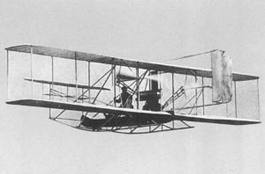

第 1 页 · 数智人才培养

数智人才培养
AI通识精品系列
周苏 教授 QQ：81505050
人工智能通识教程

第 2 页 · 第15章
第15章
周苏 教授 QQ：81505050
人工智能未来发展


第 3 页 · 人工智能技术的三大结合领域分别是大数据、物联网和云计算（边缘计算）。经过多年的发展，大数据在技术体系上已经趋于成熟，机器
人工智能技术的三大结合领域分别是大数据、物联网和云计算（边缘计算）。经过多年的发展，大数据在技术体系上已经趋于成熟，机器学习也是大数据分析比较常见的方式。物联网是人工智能的基础，也是未来智能体重要的落地应用场景，学习人工智能技术离不开物联网知识。
第15章 人工智能未来发展
第 4 页 · 另一方面，将人工智能技术与云计算和边缘计算结合正成为推动技术创新的重要力量，可以充分发挥各自的优势。例如，边缘设备（如摄
另一方面，将人工智能技术与云计算和边缘计算结合正成为推动技术创新的重要力量，可以充分发挥各自的优势。例如，边缘设备（如摄像头、传感器）收集的数据可以通过边缘计算进行初步处理，而更复杂的分析则交给云端完成。这样既保证了即时性又充分利用了云端的强大算力。此外，这种组合还支持更广泛的应用场景，促进了智能化社会的发展。
第15章 人工智能未来发展
第 5 页 · 01

01
创新发展
与社会影响
02
人工智能
的极限
03
人工智能
架构
04
未来的
人工智能
目录 / CONTENTS
第 6 页 · PART 01
PART 01
创新发展与社会影响
第 7 页 · 经过数十年的发展，人工智能取得突破性的发展，在经济社会各领域得到广泛应用并引领着新一轮的产业变革，推动人类社会进入智能化
经过数十年的发展，人工智能取得突破性的发展，在经济社会各领域得到广泛应用并引领着新一轮的产业变革，推动人类社会进入智能化时代。
人们研究了各种不同的智能体设计，从反射型智能体到基于知识的决策论智能体，再到使用强化学习的深度学习智能体都有涉及。将这些设计组合起来的技术也是多样的：可以使用逻辑推理、概率推理或神经推理，可以使用状态的原子表示、因子化表示或结构化表示，对各种类型的数据使用不同的学习算法，以及多种与外界交互的传感器和执行器。
15.1 创新发展与社会影响
第 8 页 · 可以看到人工智能在医学、金融、交通、通信等领域的各种应用，人们在科学认识和技术能力上都取得了长足进步。
可以看到人工智能在医学、金融、交通、通信等领域的各种应用，人们在科学认识和技术能力上都取得了长足进步。
总体上看，人工智能的发展具有以下“四新”特征：
（1）以深度学习为代表的人工智能核心技术取得新突破；
（2）“智能+”模式的普适应用为经济社会发展注入新动能；
（3）人工智能成为世界各国竞相战略布局的新高地；
（4）人工智能的广泛应用给人类社会带来法律法规、道德伦理、社会治理等一系列新挑战。
15.1 创新发展与社会影响
第 9 页 · 人工智能的目标是模拟、延伸和扩展人类智能，探寻智能本质，发展类人智能机器，其探索之路充满未知且曲折起伏。人工智能的发展不
人工智能的目标是模拟、延伸和扩展人类智能，探寻智能本质，发展类人智能机器，其探索之路充满未知且曲折起伏。人工智能的发展不仅推动了技术的进步，也为社会、经济乃至个人带来了深刻的启示。以下几点可以概括这些启示。
（1）持续学习与适应变化的重要性。人工智能技术的快速发展表明，无论是个人还是组织，都需要具备持续学习和快速适应新环境的能力。面对不断更新的技术和知识体系，保持开放的学习态度是跟上时代步伐的关键。
15.1.1 人工智能发展的启示
第 10 页 · （2）数据的价值与隐私保护。人工智能依赖大量数据进行训练和优化，这凸显了数据作为新时代“石油”的重要性。然而，这也提醒我
（2）数据的价值与隐私保护。人工智能依赖大量数据进行训练和优化，这凸显了数据作为新时代“石油”的重要性。然而，这也提醒我们要重视数据隐私和安全问题，确保在利用数据价值的同时，遵守相关法律法规，保护用户隐私。
（3）伦理考量和技术责任。随着人工智能的应用越来越广泛，如何确保其决策过程公平、透明，并符合人类价值观成为一个重要议题。开发者和社会需要共同思考并制定相应的伦理准则，确保人工智能技术服务于人类福祉而非造成伤害。
15.1.1 人工智能发展的启示
第 11 页 · （4）跨学科合作的必要性。人工智能的发展不仅仅是计算机科学领域的事情，它还涉及到心理学、神经科学、哲学等多个学科的知识。
（4）跨学科合作的必要性。人工智能的发展不仅仅是计算机科学领域的事情，它还涉及到心理学、神经科学、哲学等多个学科的知识。解决复杂的现实问题往往需要跨学科的合作，这种多视角的综合分析能够带来更全面、有效的解决方案。
（5）创新思维与实践。人工智能的进步鼓励人们跳出传统框架，探索新的可能性。无论是算法设计、应用场景开发还是商业模式创新，都需要敢于尝试新方法、新技术，并勇于接受失败作为成功的垫脚石。
15.1.1 人工智能发展的启示
第 12 页 · （6）促进包容性和多样性。人工智能系统的成功部署需要考虑到不同文化背景、语言习惯等因素的影响，以避免偏见和歧视。因此，在
（6）促进包容性和多样性。人工智能系统的成功部署需要考虑到不同文化背景、语言习惯等因素的影响，以避免偏见和歧视。因此，在团队构建和技术开发过程中，注重包容性和多样性有助于创建更加公正和谐的社会环境。
（7）增强人类能力而非取代。尽管人工智能具有强大的计算能力和处理速度，但它最理想的角色是辅助而非完全替代人类工作。通过人机协作，可以最大化地发挥各自的优势，实现效率提升和服务质量改进。
15.1.1 人工智能发展的启示
第 13 页 · 人工智能的发展为我们提供了关于技术创新、社会责任以及未来方向的重要启示，指导我们在享受科技进步带来的便利的同时，也要关注
人工智能的发展为我们提供了关于技术创新、社会责任以及未来方向的重要启示，指导我们在享受科技进步带来的便利的同时，也要关注其可能带来的挑战，并积极寻求应对之道。
15.1.1 人工智能发展的启示
第 14 页 · 人工智能技术已经取得了显著的进步，并在多个领域得到了广泛应用：
人工智能技术已经取得了显著的进步，并在多个领域得到了广泛应用：
（1）技术创新：基于神经网络的深度学习技术继续推动图像识别、语音识别和自然语言处理等领域的突破。强化学习通过自我游戏或模拟环境中的试验来优化决策过程，如AlphaGo和自动驾驶汽车中使用的算法。生成对抗网络（GANs）用于生成逼真的图像、视频甚至艺术作品，以及进行数据增强和模拟训练。
15.1.2 发展现状与影响
第 15 页 · （2）应用领域扩展：主要表现如下。
（2）应用领域扩展：主要表现如下。
• 医疗健康：人工智能被用来改进诊断准确性、个性化治疗方案和药物发现。
• 金融服务：用于风险管理、欺诈检测、自动化交易等。
• 智能制造：提高生产效率，实现预测性维护和质量控制。
• 智能交通：自动驾驶技术和智能交通管理系统正在逐步成为现实。
• 教育：提供个性化的学习体验和自动评估系统。
15.1.2 发展现状与影响
第 16 页 · （3）伦理与法律挑战：随着人工智能技术的应用日益广泛，关于隐私保护、数据安全、算法偏见和责任归属等问题也引起了广泛关注。
（3）伦理与法律挑战：随着人工智能技术的应用日益广泛，关于隐私保护、数据安全、算法偏见和责任归属等问题也引起了广泛关注。各国政府和国际组织正在努力制定相关政策和法规，以确保人工智能的安全、公平和透明使用。
15.1.2 发展现状与影响
第 17 页 · 人工智能的发展对于人类社会的影响主要表现如下。
人工智能的发展对于人类社会的影响主要表现如下。
（1）经济影响：人工智能技术促进了生产力的增长，创造了新的商业模式和服务，但也对就业市场产生了冲击，某些低技能工作可能被自动化取代。需要加强对劳动力的再培训和终身学习的支持，以便他们能够适应新的工作要求。
（2）社会影响：改善了生活质量，比如智能家居设备让生活更加便捷；同时，也带来了隐私泄露的风险。在公共政策制定和社会治理方面，人工智能提供了更精确的数据分析工具，有助于做出更明智的决策。
15.1.2 发展现状与影响
第 18 页 · （3）文化影响：人工智能创作的艺术作品引发了关于原创性和版权的新讨论。媒体和娱乐产业利用人工智能技术制作内容，改变了传统
（3）文化影响：人工智能创作的艺术作品引发了关于原创性和版权的新讨论。媒体和娱乐产业利用人工智能技术制作内容，改变了传统的生产和消费模式。
可见，人工智能不仅在科技层面持续创新，而且深刻地影响着我们的经济、社会和文化生活。面对这些变化，我们需要平衡好技术进步与社会责任之间的关系，确保人工智能的发展能够造福全人类。
15.1.2 发展现状与影响
第 19 页 · PART 02
PART 02
人工智能的极限
第 20 页 · 1980年，哲学家约翰·希尔勒提出了弱人工智能和强人工智能的区别。弱人工智能的机器可以表现得智能，而强人工智能的机器是真
1980年，哲学家约翰·希尔勒提出了弱人工智能和强人工智能的区别。弱人工智能的机器可以表现得智能，而强人工智能的机器是真正地有意识地在思考（而非仅模拟思考）。随着时间的推移，强人工智能的定义转而指代“人类级别的人工智能”或“通用人工智能”等，可以解决各种各样的任务，包括各种新奇的任务，并且可以完成得像人类一样好。
然而，近年来的飞速进展并不能说明人工智能的成就可以无所不及。图灵是第一个定义人工智能的人，也是第一个对人工智能提出了可能的异议，他预见了后来人提出的几乎所有意见。
15.2 人工智能的极限
第 21 页 · 图灵在“由行为的非形式化得出的论据”中提到，人类的行为太复杂了，现实中，人们必须使用一些非形式化的准则，任何一个形式化的
图灵在“由行为的非形式化得出的论据”中提到，人类的行为太复杂了，现实中，人们必须使用一些非形式化的准则，任何一个形式化的规则集都无法被完全捕捉到，而非形式化准则也无法被形式化规则集捕捉，因此也无法在计算机程序中编码。
15.2.1 由非形式化得出的论据
第 22 页 · 休伯特·德雷福斯是这一观点的主要支持者，他曾就人工智能发展发表过一系列颇具影响力的作品：《计算机不能做什么》以及和他的兄
休伯特·德雷福斯是这一观点的主要支持者，他曾就人工智能发展发表过一系列颇具影响力的作品：《计算机不能做什么》以及和他的兄弟斯图尔特·德雷福斯合著的《头脑重于机器》。同样，哲学家肯尼斯·萨瑞说：“在对计算主义的狂热推崇中追求人工智能，是根本不可能有任何长久的结果的。”他们所批评的技术后来被称为老式人工智能。
15.2.1 由非形式化得出的论据
第 23 页 · 老式人工智能对应的简单逻辑智能体设计确实很难在一个充要的逻辑规则集里捕捉适当行为的每一种可能性，我们称之为资格问题。但就
老式人工智能对应的简单逻辑智能体设计确实很难在一个充要的逻辑规则集里捕捉适当行为的每一种可能性，我们称之为资格问题。但就概率推理系统更适合开放领域和深度学习系统在各种“非形式化”任务上表现良好一样，这一批评评论并不是针对计算机本身，而仅针对使用逻辑规则进行编程这一特定风格。这种风格曾在20世纪80年代流行，但已被新方法取代。
德雷福斯最有力的论据之一是针对情景式智能体而不是无实体的逻辑推理机。相比于那些看过狗奔跑、和狗一起玩过、曾被狗舔过的智能体来说，一个对“狗”的理解仅来自一组有限的逻辑语句的智能体是处于劣势的。
15.2.1 由非形式化得出的论据
第 24 页 · 体验认知方法声称单独考虑大脑是毫无意义的：认知发生在躯体内部，而躯体处于环境中。我们需要从整体上去研究这个系统。大脑的运
体验认知方法声称单独考虑大脑是毫无意义的：认知发生在躯体内部，而躯体处于环境中。我们需要从整体上去研究这个系统。大脑的运行利用其所处环境中的规律，这里的环境包括躯体的其他部分。在体验认知方法中，机器人、视觉和一些其他的传感器成为核心而非外围部分。
德雷福斯看到人工智能还未能完全解决的领域，并由此声称人工智能是不可能的。现在，许多科研人员正在这些领域进行持续的研究和开发，从而提高人工智能的能力，降低了不可能性。
15.2.1 由非形式化得出的论据
第 25 页 · 艾伦·图灵在他那篇著名论文“计算与智能”中提出，与其问机器能否思考，不如问机器能否通过行为测试，即图灵测试。图灵测试需要
艾伦·图灵在他那篇著名论文“计算与智能”中提出，与其问机器能否思考，不如问机器能否通过行为测试，即图灵测试。图灵测试需要一个计算机程序与测试者进行5分钟的对话（通过键入消息的方式）。然后，测试者必须猜测与其对话的是人还是程序；如果程序让测试者做出的误判超过30％，那么它就通过了测试。对图灵来说，关键不在于测试的具体细节，而是智能应该通过某种开放式行为任务上的表现而不是通过哲学上的推测来衡量。
15.2.2 衡量人工智能
第 26 页 · 图灵曾推测，到2000年，拥有10亿存储单元的计算机可以通过图灵测试。但2000年已经过去了，我们仍不能就是否有程序通过
图灵曾推测，到2000年，拥有10亿存储单元的计算机可以通过图灵测试。但2000年已经过去了，我们仍不能就是否有程序通过图灵测试达成一致。许多人在他们不知道有可能是和计算机在聊天时被计算机程序欺骗了。ELIZA程序、网络聊天机器人MGoNZ和纳塔恰塔多次欺骗了与它们交谈的人，而聊天机器人赛博爱好者引起了执法部门的注意，因为它热衷于诱导聊天对象泄露足够多的个人信息致使他们的身份被盗用。
15.2.2 衡量人工智能
第 27 页 · 2014年，一款名为尤金·古斯特曼的聊天机器人在图灵测试中令33％未受训练的业余评测者做出误判。这款程序声称自己是一名来
2014年，一款名为尤金·古斯特曼的聊天机器人在图灵测试中令33％未受训练的业余评测者做出误判。这款程序声称自己是一名来自乌克兰的男孩，英语水平有限。这点让它出现语法错误有了解释。或许图灵测试其实是关于人类易受骗性的测试。目前为止聊天机器人还不能骗过受过良好训练的评测者。
图灵测试竞赛带来了更优秀的聊天机器人，但这还没成为人工智能领域的研究重点。相反，追逐竞赛的研究者更倾向于下国际象棋、下围棋、玩《星际争霸II》游戏、参加八年级科学考试或在图像中识别物体。
15.2.2 衡量人工智能
第 28 页 · 在许多这类竞赛中，程序已经达到或超过人类水平，但这并不意味着程序在这些特定任务之外也能够像人类一样。人工智能研究的关键点
在许多这类竞赛中，程序已经达到或超过人类水平，但这并不意味着程序在这些特定任务之外也能够像人类一样。人工智能研究的关键点在于改进基础科学技术和提供有用的工具，而不是让评测者上当。
15.2.2 衡量人工智能
第 29 页 · PART 03
PART 03
人工智能架构
第 30 页 · 在人工智能领域中，反射型响应适用于时间为重要因素的情形；基于知识的深思熟虑允许智能体提前做准备；当数据充足时，机器学习比
在人工智能领域中，反射型响应适用于时间为重要因素的情形；基于知识的深思熟虑允许智能体提前做准备；当数据充足时，机器学习比较方便；但当环境发生变化或人类设计者在相关领域知识不足时，机器学习就是必要的了。
长期以来，人工智能一直分裂为符号系统（基于逻辑和概率推断）和连接系统（基于大量参数的损失函数最小化）两个方向。如何取两家之长是人工智能的一个持续性的挑战。符号系统可以拼接长推理链，并利用结构化表示的表达能力。连接系统在数据有噪声的情况下也能识别出模式。一个研究方向是将概率编程与深度学习相结合。
15.3 人工智能架构
第 31 页 · 同时，智能体也需要控制自己的思考过程。它们必须充分利用时间，在需要做出决策前结束思考。比如，一个出租车驾驶智能体在看到前
同时，智能体也需要控制自己的思考过程。它们必须充分利用时间，在需要做出决策前结束思考。比如，一个出租车驾驶智能体在看到前方事故时，必须在一瞬间决定是刹车还是转向。它也需要在瞬间考虑最重要的问题，如左右两侧车道是否畅通、后方是否紧跟着一辆大卡车，而不是考虑该去哪接下一位乘客。这些问题通常在实时人工智能课题下进行研究。随着人工智能系统转向更加复杂的领域，智能体永远不会有足够长的时间来精确解决问题，因此所有问题都将变为实时问题。
15.3 人工智能架构
第 32 页 · 观察人工智能技术的发展，可以发现大多数时候，人工智能装置通常并没有直接接触外界。人工智能系统大都建立在人工提供输入并解释
观察人工智能技术的发展，可以发现大多数时候，人工智能装置通常并没有直接接触外界。人工智能系统大都建立在人工提供输入并解释输出的基础上。同时，机器人系统专注于低层级任务，这些任务通常不涉及高层级的推理和规划，对感知的要求也极低。这种状况一部分是因为要让机器人工作所需要的费用和工程量很大，另一部分是因为处理能力和算法有效性还不足以处理高带宽的视觉输入。
15.3.1 传感器与执行器
第 33 页 · 随着机器人技术的成熟，情况在迅速转变。而机器人的进步得益于可靠的小型电动机驱动和改进的传感器。自动驾驶汽车中激光雷达的成
随着机器人技术的成熟，情况在迅速转变。而机器人的进步得益于可靠的小型电动机驱动和改进的传感器。自动驾驶汽车中激光雷达的成本大幅度下降，而单芯片版本的传感器成本已经很低。雷达传感器现在已足够灵敏，甚至可以计算一叠纸包含的纸张数量。
15.3.1 传感器与执行器
第 34 页 · 手机摄像头对更优秀图像处理性能的需求降低了用在机器人上的高分辨率摄像头的成本。MEMS（微机电系统）技术提供了小型化加速
手机摄像头对更优秀图像处理性能的需求降低了用在机器人上的高分辨率摄像头的成本。MEMS（微机电系统）技术提供了小型化加速度计、陀螺仪，以及小到可以植入人工飞行昆虫中的处理器。可以将数以百万个MEMS设备结合成强大的大型执行器。3D打印和生物打印技术使得用原型进行实验更为容易。
15.3.1 传感器与执行器
第 35 页 · 由此可以看出，人工智能系统正处在从最初的纯软件系统转变为有效的嵌入式机器人系统的关键时期，灵活、智能的机器人很可能最先在
由此可以看出，人工智能系统正处在从最初的纯软件系统转变为有效的嵌入式机器人系统的关键时期，灵活、智能的机器人很可能最先在工业领域（环境更可控、任务重复度更高、投资价值更易衡量）而非民用领域（环境与任务的变化更复杂）取得进步。
15.3.1 传感器与执行器
第 36 页 · 传统地，人工智能的大多数进展都由特定任务上的竞赛驱动，如DARPA举办的自动驾驶汽车大挑战赛、ImageNet对象识别竞
传统地，人工智能的大多数进展都由特定任务上的竞赛驱动，如DARPA举办的自动驾驶汽车大挑战赛、ImageNet对象识别竞赛或者与世界冠军比赛下国际象棋、下围棋、打扑克、玩《危险边缘》。对每项任务，我们通常使用专门为此任务收集的数据，使用独立的机器学习模型从零开始训练，构造独立的人工智能系统。但一个真正智能的智能体，能完成的应该不止一件事。
15.3.2 通用人工智能
第 37 页 · 图灵曾列出他的清单，科幻小说家罗伯特·海因莱因则这样说：
图灵曾列出他的清单，科幻小说家罗伯特·海因莱因则这样说：
生而为人，应该能够换尿布、策划入侵、杀猪、驾船、设计建筑、写十四行诗、算账、砌墙、接骨、抚慰临终之人、接受命令、下达命令、合作、独行、解方程、分析新问题、抛洒粪肥、编写程序、烹饪美食、高效战斗、英勇牺牲。只有昆虫才需要专业分工。
15.3.2 通用人工智能
第 38 页 · 至今还没有一个人工智能系统能达到这两个列表中的任一个，一些通用人工智能或人类级别人工智能（HLAI）的支持者坚持认为，继
至今还没有一个人工智能系统能达到这两个列表中的任一个，一些通用人工智能或人类级别人工智能（HLAI）的支持者坚持认为，继续在特定任务或单独组件上进行研究不足以让人工智能精通各项任务，而需要一种全新的方法。实际上，大规模的新突破是必要的，但总的来说，人工智能领域在探索和开发之间已经做出了合理的平衡，在组装一系列组件，改进特定任务的同时，也探索了一些有前途的、有时甚至是遥远的想法。
15.3.2 通用人工智能
第 39 页 · 如果在1903年时告诉莱特兄弟停止研究单任务飞机，去设计一种可以垂直起飞、超越声速、可载客数百名、能登陆月球的“人工通用
如果在1903年时告诉莱特兄弟停止研究单任务飞机，去设计一种可以垂直起飞、超越声速、可载客数百名、能登陆月球的“人工通用飞行器”，这种做法是不可行的。莱特兄弟制造的人类历史上第一架能自由飞行且可操纵的动力飞机“飞行者一号”是用结实的云杉木制
成的双翼飞机。在他们首次飞行后，再每年
举办竞赛促进云杉木双翼飞机改进也是不现
实的。
15.3.2 通用人工智能

第 40 页 · 我们看到，对组件的研究可以激发新的想法，如生成对抗网络（GAN）和Transformer 语言模型都开启了研究的新领域。
我们看到，对组件的研究可以激发新的想法，如生成对抗网络（GAN）和Transformer 语言模型都开启了研究的新领域。我们也看到了迈向“行为多样性”的脚步。例如，20世纪90年代，机器翻译为每一个语言对（如法语到英语）建立一个系统，而如今仅用一个系统就可以识别输入文本属于100种语言中的哪一种，并将其翻译到100种目标语言中的任一种。还有一种自然语言系统可以用一个联合模型执行5个不同的任务。
15.3.2 通用人工智能
第 41 页 · 计算机编程领域始于几位非凡的先驱，但直到软件工程发展起来，有了大量可用工具，并形成了一个由教师、学生、从业者、企业家、投
计算机编程领域始于几位非凡的先驱，但直到软件工程发展起来，有了大量可用工具，并形成了一个由教师、学生、从业者、企业家、投资者和客户共同组成的欣欣向荣的生态系统后，它才成为一个重要产业。
15.3.3 人工智能工程
第 42 页 · 人工智能产业尚未达到这种成熟度。的确，我们拥有各种强大的工具和框架，如TensorFlow、Keras、PyTorch、
人工智能产业尚未达到这种成熟度。的确，我们拥有各种强大的工具和框架，如TensorFlow、Keras、PyTorch、Caffe、Scikit-learn和SciPy。遗憾的是，已经证明许多最有前途的方法（如GAN和深度强化学习）都难以使用，因为需要经验和一定程度的调试才能让这些方法在一个新领域上训练好。我们缺少足够的专家在所有需要的领域上完成这些工作，也缺少工具和生态系统让不太专业的从业者成功。
15.3.3 人工智能工程
第 43 页 · 谷歌公司的杰夫·迪安认为，在未来，我们希望机器学习能处理数百万个任务。从零开始开发每个系统是不切实际的，所以他建议不如构
谷歌公司的杰夫·迪安认为，在未来，我们希望机器学习能处理数百万个任务。从零开始开发每个系统是不切实际的，所以他建议不如构建一个大型系统，对每个新任务，从系统中抽取出与任务相关的部分。我们已经看到在这方面的一些进展，比如有数十亿个参数的Transformer 语言模型（如BERT、GPT-2），以及“非常大的”集成神经网络架构，在一个实验中参数数量可达680亿个。但依然有许多工作要做。
15.3.3 人工智能工程
第 44 页 · PART 04
PART 04
未来的人工智能
第 45 页 · 用几十年的时间，人们可以创建出拥有人脑般处理能力的计算机。到那时候，我们可能制造出能在现实世界中运作的机器人，它至少具备
用几十年的时间，人们可以创建出拥有人脑般处理能力的计算机。到那时候，我们可能制造出能在现实世界中运作的机器人，它至少具备一名不那么聪明的人类的行为能力。它们将利用与人类神经系统相同的方法来实现低级别功能，其他的则更多依靠计算机科学而不是神经生物学。正是因为如此，它们没有生命，也不具备自我意识。这类机器人可以用于完成重复性工作，工作场景必须相对固定，遭遇突发情况的概率较低。即使是这样，它们还是常常会不知所措，带来的麻烦事比做出的贡献要多得多，这可能也是前沿科技的祸根。
15.4 未来的人工智能
第 46 页 · 创造真正的人工智能需要的绝不仅仅只是内存大、速度快的计算机，它需要研究大脑的运作，要求更先进的扫描和探测工具，也需要研究
创造真正的人工智能需要的绝不仅仅只是内存大、速度快的计算机，它需要研究大脑的运作，要求更先进的扫描和探测工具，也需要研究各类技术，要求大量实验及错误构建原型。所有这些都需要时间，没有人能确定到底需要多久。这样的人工智能可以用于完成许多人类力所不能及的任务，比如，太空探索，但它们也将面临与人类一样的缺点的困扰。
15.4 未来的人工智能
第 47 页 · 几乎可以肯定，那种在不同物体之间建立联系的能力，有助于人们很好地解决一些意料之外的问题。同人脑类似的思维也将会胡思乱想，
几乎可以肯定，那种在不同物体之间建立联系的能力，有助于人们很好地解决一些意料之外的问题。同人脑类似的思维也将会胡思乱想，会拥有各种情感，因为这是我们思维运作不可或缺的特点。像人类一样，人工智能设备也会犯错，需要高效地学习不同技能。
15.4 未来的人工智能
第 48 页 · 未来的人工智能预计将继续快速发展，并在多个方面实现重大突破和变革。以下是一些可能的技术进步趋势和影响。
未来的人工智能预计将继续快速发展，并在多个方面实现重大突破和变革。以下是一些可能的技术进步趋势和影响。
（1）更强大的计算能力：随着量子计算等新型计算技术的发展，AI将能够处理更加复杂的问题，解决当前无法触及的大规模数据集或高度复杂的模型训练问题。
（2）自我学习与适应性增强：未来的人工智能系统可能会具备更强的自我学习能力和环境适应性，能够在没有明确编程的情况下自主改进性能，甚至能够进行跨领域知识迁移。
15.4 未来的人工智能
第 49 页 · （3）通用人工智能（AGI）：虽然我们还处于狭义人工智能阶段，但长远来看，科学家们正朝着创建具有广泛认知能力的通用人工智
（3）通用人工智能（AGI）：虽然我们还处于狭义人工智能阶段，但长远来看，科学家们正朝着创建具有广泛认知能力的通用人工智能努力，这种人工智能能够在不同任务上达到人类水平的表现。
15.4 未来的人工智能
第 50 页 · 贯穿所有关于强人工智能争论的主题是意识：对外部世界、自我、生活的主观体验的认识。经验的内在本质的专业术语是感质（源于拉丁
贯穿所有关于强人工智能争论的主题是意识：对外部世界、自我、生活的主观体验的认识。经验的内在本质的专业术语是感质（源于拉丁语，大意是“什么样的”）。最大的问题是机器是否有感质。在电影《2001太空漫游》中，当宇航员戴维·鲍曼断开计算机哈尔的“认知电路”时，屏幕上写着“戴夫，我害怕。戴夫，我的脑子正在消失，我能感觉到”。哈尔真的有感情（且值得同情）吗？又或者这个回复只是一种算法响应，与“404错误：未找到”没有任何区别？
15.4.1 意识与感质
第 51 页 · 对动物们也有类似的问题：宠物的主人确信他们的猫狗有意识，但不是所有科学家都认同这一点。蟋蟀会根据温度改变自己的行为，但几
对动物们也有类似的问题：宠物的主人确信他们的猫狗有意识，但不是所有科学家都认同这一点。蟋蟀会根据温度改变自己的行为，但几乎没人会说蟋蟀能体验到温暖或寒冷的感觉。
意识问题难以解决的一个原因是，即使经过几个世纪的争论，它的定义依然不明确。但解决方法可能不远了。近来，在坦普顿基金会的赞助下，哲学家和神经科学家合作开展了一系列能解决部分问题的实验。两种主流意识理论（全球工作空间理论和整合信息理论）的支持者都认为这些实验可以证明一种理论优于另一种，这在哲学史上实属罕见。
15.4.1 意识与感质
第 52 页 · 图灵承认意识问题是一个困难的问题，但他否认它与人工智能的实践有很大的关联：“我不想给人留下我认为意识并不神秘这样的印象…
图灵承认意识问题是一个困难的问题，但他否认它与人工智能的实践有很大的关联：“我不想给人留下我认为意识并不神秘这样的印象……但我认为，我们不一定需要在回答本文所关注的问题之前先揭开这些奥秘。”我们认同图灵的观点，我们感兴趣的是创建能做出智能行为的程序。意识的各个方面，认知、自我认知、注意力等都可以通过编程成为智能机器的一部分。让机器拥有和人类一模一样的意识这一附加项目并不是我们想要做的。我们认同做出智能行为需要一定程度的认知，这个程度在不同任务中是不同的，而涉及与人类互动的任务需要关于人类主观经验的模型。
15.4.1 意识与感质
第 53 页 · 在对经验建模这方面，人类明显比机器有优势，因为人们可以靠自身去主观感受他人的客观体验。例如，如果你想知道别人用锤子敲拇指
在对经验建模这方面，人类明显比机器有优势，因为人们可以靠自身去主观感受他人的客观体验。例如，如果你想知道别人用锤子敲拇指是什么感觉，你可以用锤子敲自己的拇指。但机器没有这种能力，尽管它们可以运行彼此的代码。
15.4.1 意识与感质
第 54 页 · 一些哲学家声称，一台能做出智能行为的机器实际上并不会思考，而只是在模拟思考。但大多数人工智能研究者并不关心这一区别，计算
一些哲学家声称，一台能做出智能行为的机器实际上并不会思考，而只是在模拟思考。但大多数人工智能研究者并不关心这一区别，计算机科学家艾兹格·迪杰斯特拉曾说过：“机器能否思考……就像潜艇能否游泳这个问题一样重要”。《美国传统英语词典》中对游泳的第一条定义是“通过四肢、鳍或尾巴在水中移动”，大多数人都认同潜艇是无肢的，不能游泳。该词典也定义飞行为“通过翅膀或翅膀状的部件在空中移动”，大多数人都认同飞机有翅膀状部件，能够飞行。然而，无论是问题还是答案都与飞机和潜艇的设计或性能没有任何关系，而是与英语中的单词用法有关。
15.4.2 机器能思考吗
第 55 页 · 图灵再次解决了这一问题。他指出，关于他人内在心理状态如何，我们从未有任何直接证据，这是一种精神唯我论。图灵说：“与其继续
图灵再次解决了这一问题。他指出，关于他人内在心理状态如何，我们从未有任何直接证据，这是一种精神唯我论。图灵说：“与其继续在这个观点上争论不休，不如回到每个人通常都认可的礼貌惯例。”图灵主张，如果我们和能做出智能行为的机器相处过，那么我们也应该将这一礼貌惯例的使用范围延伸到机器上。然而，现在我们确实有了一些经验，但看起来在对感知归因时，类人的外表和声音至少与纯粹的智力因素同样重要。
15.4.2 机器能思考吗
第 56 页 · 2024年年末，OpenAI的前首席科学家伊利亚·苏茨克维在一次演讲中，提出了一个令人惊讶的观点：尽管计算能力在不断提升
2024年年末，OpenAI的前首席科学家伊利亚·苏茨克维在一次演讲中，提出了一个令人惊讶的观点：尽管计算能力在不断提升，但数据量的增长却似乎停滞不前。这一观察引发了他对预训练模型未来的质疑，苏茨克维断言，预训练的时代或将走向终结。
15.4.3 预训练时代或走向终结
第 57 页 · 苏茨克维进一步展望了人工智能的未来走向，他认为，未来的人工智能系统将不再仅仅依赖于大规模的数据训练，而是会发展出更加接近
苏茨克维进一步展望了人工智能的未来走向，他认为，未来的人工智能系统将不再仅仅依赖于大规模的数据训练，而是会发展出更加接近人类思考方式的解决问题能力。这样的人工智能将具备推理能力，使得其行为和决策变得更加难以预测。这一预测无疑为人工智能的发展描绘了一个既充满潜力又挑战重重的图景。
15.4.3 预训练时代或走向终结
第 58 页 · 在演讲中，苏茨克维还提到了他认为的人工智能发展的三大关键方向：代理人工智能、合成数据和推理时间计算。他相信，这三个领域的
在演讲中，苏茨克维还提到了他认为的人工智能发展的三大关键方向：代理人工智能、合成数据和推理时间计算。他相信，这三个领域的突破将推动人工智能向更高层次发展，甚至可能催生出超级人工智能的出现。代理人工智能指的是能够自主行动、做出决策的人工智能系统；合成数据则是通过算法生成的高质量数据，可以用于训练人工智能模型而无需依赖真实世界的数据；推理时间计算则关注于如何在有限的计算资源下，让人工智能系统做出更快速、更准确的决策。
15.4.3 预训练时代或走向终结
第 59 页 · 苏茨克维的这些预测和见解，不仅揭示了人工智能领域的最新动态，也引发了人们对人工智能未来发展的深思。随着技术的不断进步，人
苏茨克维的这些预测和见解，不仅揭示了人工智能领域的最新动态，也引发了人们对人工智能未来发展的深思。随着技术的不断进步，人工智能将如何改变我们的生活、工作和社会结构，成为了值得探讨和关注的问题。
15.4.3 预训练时代或走向终结
第 60 页 · 人工智能在重塑工程范式方面发挥着关键作用，它提供的工具和方法可提高各个领域的精度、效率和适应性。想要在人工智能竞赛中保持
人工智能在重塑工程范式方面发挥着关键作用，它提供的工具和方法可提高各个领域的精度、效率和适应性。想要在人工智能竞赛中保持领先的工程领导者应该关注四个关键领域的进步：生成式人工智能、验证和确认、降阶模型（ROM）和控制系统设计。
15.4.4 影响工程的顶级趋势
第 61 页 · 趋势一：生成式人工智能的应用转向框图、3D模型和流程图。
趋势一：生成式人工智能的应用转向框图、3D模型和流程图。
虽然最初对基于文本的生成式人工智能的关注继续影响以软件为中心的工作流程，但它对具有更高级别抽象的工程工具的影响却显滞后。在2025年，预计生成式人工智能在“无代码”工程
工具（如框图、3D模型和流程图）中
的应用将继续取得进展。
15.4.4 影响工程的顶级趋势
第 62 页 · 这些工具使工程师能够以图形方式表示复杂的系统，毫不费力地编辑组件，并管理固有的复杂性。此外，它们对于工程师的工作效率至关
这些工具使工程师能够以图形方式表示复杂的系统，毫不费力地编辑组件，并管理固有的复杂性。此外，它们对于工程师的工作效率至关重要，并验证了工程师对系统级性能的信心。将生成式人工智能与这些工具相结合将进一步提高他们的生产力，同时保持最终用户熟悉的界面。该领域的更多工具将集成人工智能助手，使其能够理解工程模型并协助其设计和管理。
15.4.4 影响工程的顶级趋势
第 63 页 · 趋势二：工程师利用验证和确认实现人工智能合规性。
趋势二：工程师利用验证和确认实现人工智能合规性。
随着人工智能与汽车、医疗保健和航空航天应用中安全关键型系统的融合加速，行业管理机构正在推出人工智能合规的要求、框架和指导。作为回应，工程师必须现在就优先考虑验证和确认（V&V）过程，以确保其人工智能组件已准备好在任何条件下部署，并满足潜在的可靠性、透明度和偏差合规标准。
15.4.4 影响工程的顶级趋势
第 64 页 · 分布外（OOD）检测是机器学习领域中一个关键的研究方向，它专注于识别那些在模型训练阶段未被覆盖的数据样本。这种检测技术对
分布外（OOD）检测是机器学习领域中一个关键的研究方向，它专注于识别那些在模型训练阶段未被覆盖的数据样本。这种检测技术对于提高模型的鲁棒性至关重要，尤其是在模型可能遇到与训练数据显著不同的新环境时。OOD检测的核心挑战在于，模型需要能够在面对未知或异常数据时做出正确的响应，而不是盲目地做出预测。
15.4.4 影响工程的顶级趋势
第 65 页 · V&V对于验证深度学习模型的稳健性和检测分布外场景至关重要，特别是在安全关键型应用中。稳健性验证至关重要，因为神经网络可
V&V对于验证深度学习模型的稳健性和检测分布外场景至关重要，特别是在安全关键型应用中。稳健性验证至关重要，因为神经网络可能会对带有微小的、难以察觉的变化（称为对抗性示例）的输入进行错误分类。例如，胸部X光图像中的一个细微扰动可能会导致模型错误地将肺炎识别为正常。工程师可以提供模型一致性的数学证明，并使用形式化验证方法（例如抽象解释）测试这些场景。此过程通过识别和解决漏洞来增强模型的可靠性并确保符合安全标准。
15.4.4 影响工程的顶级趋势
第 66 页 · 分布外检测使人工智能系统能够识别并适当地处理不熟悉的输入。这种能力对于保持准确性和安全性至关重要，尤其是当意外数据导致错
分布外检测使人工智能系统能够识别并适当地处理不熟悉的输入。这种能力对于保持准确性和安全性至关重要，尤其是当意外数据导致错误预测时。辨别分布内和分布外数据的能力确保人工智能模型可以将不确定的情况交给人类专家，从而防止关键应用程序中出现潜在故障。
专注于V&V允许工程师遵守人工智能框架和标准，同时推动行业内的产品开发。主动的合规方法可确保人工智能系统可靠、安全且符合道德规范，从而在快速发展环境中保持竞争优势。
15.4.4 影响工程的顶级趋势
第 67 页 · 趋势三：基于人工智能的降阶模型在工程领域的兴起。
趋势三：基于人工智能的降阶模型在工程领域的兴起。
随着人工智能技术和计算能力的进步，使用基于人工智能的降阶模型（ROM）的趋势预计会增长。工程师利用这些模型将提高系统性能和可靠性，以及系统设计和模拟的效率和功效。这种转变背后的主要驱动力是工程师需要管理日益复杂的系统，同时保持高精度和速度。传统的计算机辅助工程（CAE）和计算流体动力学（CFD）模型虽然准确，但计算量大且不适合实时应用。
15.4.4 影响工程的顶级趋势
第 68 页 · 基于人工智能的ROM通过减少计算需求同时保持准确性来解决这个问题。工程师可以使用这些模型更快地模拟复杂现象，从而实现更快
基于人工智能的ROM通过减少计算需求同时保持准确性来解决这个问题。工程师可以使用这些模型更快地模拟复杂现象，从而实现更快的迭代和优化。
此外，基于人工智能的ROM具有适应不同参数和条件的高度通用能力，增强了其在不同场景中的适用性。这种适应性在航空航天、汽车和能源领域尤其有价值，因为这些领域的工程系统通常涉及需要详细建模和模拟的复杂物理现象。
15.4.4 影响工程的顶级趋势
第 69 页 · 例如，设计和测试飞机部件（如机翼或发动机）的工程师可以更有效地模拟空气动力学特性和应力因素，从而帮助工程师快速迭代和优化
例如，设计和测试飞机部件（如机翼或发动机）的工程师可以更有效地模拟空气动力学特性和应力因素，从而帮助工程师快速迭代和优化设计。此外，基于人工智能的ROM可以适应各种飞行条件，使其成为使用同一模型测试多种场景的多功能工具。此功能可加速开发过程、降低成本并提高最终产品的可靠性。
降阶建模通过简化复杂的 CFD/CAE/FEA 模型来加速模拟，平衡保真度和速度，实现高效的工程设计。
15.4.4 影响工程的顶级趋势
第 70 页 · 趋势四：人工智能打破复杂系统控制的障碍。
趋势四：人工智能打破复杂系统控制的障碍。
人工智能与控制设计的持续融合将改变该领域，特别是在管理复杂系统和嵌入式应用程序方面。传统上，控制系统设计依赖于第一性原理建模，这需要对系统有丰富的知识和深入的了解。数据驱动建模仅限于在设计范围内的一小部分中有效的线性模型。人工智能正在通过从数据中创建精确的非线性模型来改变这种状况。这使得创建结合第一性原理和数据且在整个操作范围内有效的高精度模型成为可能。这一进步使得人们能够更好地控制复杂系统。
15.4.4 影响工程的顶级趋势
第 71 页 · 同时，微控制器不断增强的计算能力也促进了人工智能算法直接嵌入到系统中。这种集成在消费电子和汽车行业尤其具有影响力，因为高
同时，微控制器不断增强的计算能力也促进了人工智能算法直接嵌入到系统中。这种集成在消费电子和汽车行业尤其具有影响力，因为高响应系统正在成为常态。例如，人工智能嵌入电动工具中以监测和应对环境变化，例如可能带来安全风险的突然材料密度变化。这些工具使用嵌入式人工智能来自主调整其操作，从而提高安全性和性能。
15.4.4 影响工程的顶级趋势
第 72 页 · 强人工智能的实现与否并不妨碍机器人正在变得像人类一样智能，只是意味着它们缺乏自我意识而已。只要计算机功能足够强大，弱人工
强人工智能的实现与否并不妨碍机器人正在变得像人类一样智能，只是意味着它们缺乏自我意识而已。只要计算机功能足够强大，弱人工智能和实用型人工智能对满足我们可能的所有需求来说已经足够。如果人造思维能做到所有人类可以做到的事，不管它有没有自我意识都无关紧要。我们可以派机器人来完成持续几十年的星际探索，因为它们可以轻易进入休眠模式之后再被唤醒。我们也可以让机器人来完成危险系数高的工作，因为即便它们死亡也不会涉及任何伦理困境。
15.4.5 未来已来
第 73 页 · 如果我们清楚地知道人脑如何运作，就可以在计算机中进行模拟，使其以与天然大脑完全一致的方式工作。也许几十年后这一目标可以实
如果我们清楚地知道人脑如何运作，就可以在计算机中进行模拟，使其以与天然大脑完全一致的方式工作。也许几十年后这一目标可以实现，但现在我们对大脑的认识还不够，无法编写相应的程序。当然，我们还需要传感器和传动器来模拟身体其他部位，而这一点仅凭现在的能力也无法实现。
15.4.5 未来已来
第 74 页 · 我们不能简单地将真实或是模拟人脑与激光测距器、电荷耦合器摄像机、麦克风、气缸和电动机相连，大脑已经进化到可以利用眼睛和耳
我们不能简单地将真实或是模拟人脑与激光测距器、电荷耦合器摄像机、麦克风、气缸和电动机相连，大脑已经进化到可以利用眼睛和耳朵来处理数据及精准控制肌肉。也许我们不应该期待在计算机中建设人脑，而是创造出全新的智能，拥有完全不同的传感器和受动器。这样的思维对我们来说将是完全陌生的，不同于现存的任何生物。
15.4.5 未来已来
第 75 页 · 目前为止，人工智能似乎和其他强大的革命性技术一致，如印刷术、管道工程、航空旅行和电话通信系统。所有这些技术都产生了积极影
目前为止，人工智能似乎和其他强大的革命性技术一致，如印刷术、管道工程、航空旅行和电话通信系统。所有这些技术都产生了积极影响，但也产生了一些意想不到的副作用，给弱势阶层带来更大的不利影响。我们应该努力将负面影响降到最低。人工智能也不同于过去的革命性技术。即使将印刷术、管道工程、航空旅行和电话通信系统的技术提高到其逻辑极限，也不会对人类的世界霸权产生任何威胁，但人工智能会。
15.4.5 未来已来
第 76 页 · 总之，人工智能在其短暂的历史中取得了巨大的进步，然而图灵在1950年发表的论文“计算与智能”中的最后一句话时至今日依然有
总之，人工智能在其短暂的历史中取得了巨大的进步，然而图灵在1950年发表的论文“计算与智能”中的最后一句话时至今日依然有效。
我们只能看到前方的一小段距离，
但我们知道依然有很长一段路要走。
15.4.5 未来已来
第 77 页 · 01

01
创新发展
与社会影响
02
人工智能
的极限
03
人工智能
架构
04
未来的
人工智能
目录 / CONTENTS
第 78 页 · 第15章
第15章
周苏 教授 QQ：81505050
人工智能未来发展